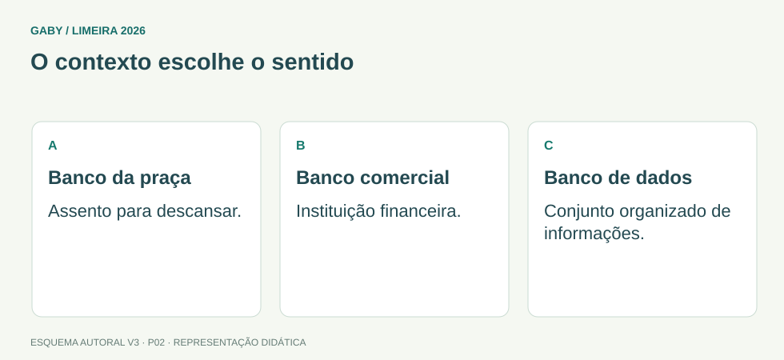

Objetivos do módulo
- Reconhecer sinônimos e antônimos em contexto.
- Perceber que sinonímia raramente é absoluta.
- Avaliar se uma substituição preserva sentido e registro.
- Distinguir antônimos graduais, complementares e recíprocos, inclusive os formados por prefixo de negação.
- Reconhecer hiperônimos, hipônimos e campos semânticos.
- Diferenciar polissemia, homonímia, paronímia e ambiguidade, e usar corretamente os parônimos mais cobrados.
- Perceber a mudança de sentido causada pela posição do adjetivo e pelas palavras de inclusão e de exclusão.
- Reconhecer o valor de conectivos, preposições e do “que” para trocá-los sem alterar o sentido.
O contexto escolhe o sentido

Descrição em texto do esquema
- Banco da praça: Assento para descansar.
- Banco comercial: Instituição financeira.
- Banco de dados: Conjunto organizado de informações.
Oficina visual · aplique o esquema
Em “o servidor apresentou uma resposta precisa”, “precisa” pode ser substituída por “necessita”? Explique e proponha uma substituição adequada.
Atividade autoral complementar da V3. Registre sua resposta; a resolução está no arquivo de gabarito e revisão.
Mapa do conteúdo
- 1. Sinonímia depende do contexto
- 2. Antonímia e oposição
- 3. Polissemia e contexto
- 4. Precisão, intensidade e registro
- 5. Hiperonímia, hiponímia e campo semântico
- 6. Parônimos e homônimos que mudam o sentido
- 7. Posição do adjetivo e palavras de inclusão e exclusão
- 8. Conectivos, preposições e valores do “que”
1. Sinonímia depende do contexto
Sinônimos são palavras de sentido próximo, não necessariamente idêntico em todos os contextos. “Casa” e “lar” podem se aproximar, mas “lar” traz frequentemente componente afetivo. “Começar” e “iniciar” são próximos, porém o registro e a construção sintática podem variar.
Em prova, a pergunta normalmente não é “estas palavras são sinônimas no dicionário?”, e sim “a substituição mantém o sentido neste trecho?”.
Teste da substituição
Para saber se uma troca preserva o sentido, reescreva a frase com a palavra nova e confira quatro pontos:
- Sentido no trecho: a palavra nova diz o mesmo naquele contexto, não apenas em outro uso. “Claro” equivale a “luminoso” em “quarto claro”, mas a “evidente” em “ficou claro que houve erro”.
- Intensidade: a ideia não ficou mais forte nem mais fraca (seção 4).
- Valor e registro: a troca não passou a elogiar, criticar ou soar informal num texto neutro e formal.
- Construção: a frase continua correta. “Concordou com o pedido” pode virar “anuiu ao pedido”: o verbo novo pede a preposição “a”.
O Manual de Redação da Presidência da República dá o mesmo conselho para textos oficiais: procure sinônimos para evitar repetição, mas mantenha a palavra original se a troca deixar o texto ambíguo ou menos claro.
Vocabulário formal frequente
Textos administrativos usam palavras pouco comuns na fala. Guarde o núcleo de sentido de cada uma e teste a troca na frase.
| Palavra | Sentido | Exemplo |
|---|---|---|
| conciso, sucinto | curto e claro, sem palavras sobrando | “O aviso foi conciso: data, local e horário.” |
| prolixo | que usa mais palavras do que o necessário; é o oposto de conciso | “A ata ficou prolixa e repetiu três vezes a mesma decisão.” |
| anuência (verbo: anuir) | consentimento, concordância | “A reforma depende da anuência do síndico.” |
| mitigar | tornar mais brando, atenuar, aliviar | “O toldo mitigou o calor da fila.” |
| zelar por, resguardar | cuidar de, proteger, preservar | “O arquivista zela pelos livros antigos e os resguarda da umidade.” |
| exímio, insigne | excelente no que faz; notável, ilustre | “uma exímia costureira”; “um insigne maestro” |
| dilatar (um prazo) | alargar, estender | “A escola dilatou o prazo da rematrícula até sexta-feira.” |
| ressalva | restrição ou exceção feita a uma afirmação | “Aprovou o projeto, com ressalva ao item 3.” |
| tácito | que se entende sem ser dito; implícito | “Houve um acordo tácito: ninguém tocou no assunto.” |
Sinônimos não são perfeitos: conotação e carga avaliativa
Duas palavras podem apontar para a mesma realidade e, ainda assim, transmitir avaliações diferentes. Esse acréscimo de sentido é a conotação: a escolha da palavra revela a atitude de quem fala. Por isso os estudos de semântica afirmam que não existem sinônimos perfeitos, intercambiáveis em qualquer contexto.
| Valor positivo ou neutro | Valor negativo | O que muda |
|---|---|---|
| econômico | sovina, pão-duro | o mesmo hábito de gastar pouco é elogiado ou criticado |
| curioso | bisbilhoteiro | interesse saudável × intromissão |
| cauteloso | medroso | prudência × falta de coragem |
| determinado | cabeça-dura | constância elogiada × insistência criticada |
Eufemismo é o uso de uma expressão mais suave para atenuar um fato desagradável: “faleceu” em vez de “morreu”, “pessoa de baixa renda” em vez de “pobre”, “foi desligado da empresa” em vez de “foi demitido”. A informação é a mesma; o efeito é mais delicado. Expressões grosseiras ou jocosas fazem o caminho inverso e mudam o registro.
Teste prático: quando a questão perguntar se a troca torna a avaliação mais favorável, mais negativa ou mais suave, compare a carga de cada palavra, e não só o significado básico.
2. Antonímia e oposição
Antônimos expressam sentidos opostos, mas há tipos diferentes de oposição. “Quente/frio” admite gradação; “vivo/morto” tende à complementaridade; “comprar/vender” descreve uma relação inversa. Identificar o tipo ajuda a interpretar.
| Relação | Exemplo | Observação |
|---|---|---|
| Gradual | quente/frio | há estados intermediários |
| Complementar | presente/ausente | um exclui o outro no contexto |
| Recíproca | comprar/vender | ações vistas de polos diferentes |
Como reconhecer cada tipo de oposição
| Tipo | Teste | Exemplo |
|---|---|---|
| Gradual (graduável) | aceita “mais”, “muito” e um meio-termo (“nem caro nem barato”) | caro/barato: há preços intermediários |
| Complementar | negar um termo afirma o outro; não há meio-termo | par/ímpar: número inteiro que não é par é ímpar |
| Recíproca (conversa) | a mesma relação vista dos dois lados: se A é X de B, então B é Y de A | dar/receber: “Ana deu o livro a Rui” = “Rui recebeu o livro de Ana”; avô/neto |
O antônimo depende do sentido usado
Uma palavra com vários sentidos tem um antônimo diferente para cada um. Procure o oposto do sentido que a palavra tem naquele trecho.
| Expressão | Sentido no trecho | Antônimo adequado |
|---|---|---|
| tecido leve | de pouco peso | pesado |
| ferimento leve | de pouca gravidade | grave |
| explicação clara | fácil de entender | confusa, obscura |
| pessoa aberta a críticas | receptiva | avessa a críticas |
Na prova, descarte primeiro as alternativas que só reafirmam a ideia, como sinônimos disfarçados. O oposto de “permanente” é “temporário”; “duradouro” e “estável” apenas repetem a ideia de permanência.
Antônimos formados por prefixo de negação
Muitos antônimos nascem do acréscimo de um prefixo que nega ou inverte o sentido da palavra primitiva.
| Prefixo | Sentido | Exemplos |
|---|---|---|
| in- (im- antes de p e b; i- antes de l, m, n e r) | negação | capaz/incapaz, possível/impossível, legal/ilegal, negável/inegável, regular/irregular |
| des- | negação ou ação contrária | leal/desleal, organizado/desorganizado, fazer/desfazer |
| a-, an- | ausência, privação | moral/amoral, normal/anormal |
| anti- | oposição, contra | higiênico/anti-higiênico, social/antissocial |
Cuidados:
- Nem toda derivação cria oposição. “Jardim/jardineiro” e “leve/leveza” mudam a classe ou o sentido da palavra, mas não negam nada.
- Nem todo “in-” é negação. Em “imergir” (mergulhar) e “importar” (trazer para dentro), o prefixo indica movimento para dentro.
- Prefixos diferentes produzem sentidos diferentes: o Manual de Redação distingue “amoral” (desprovido de moral) de “imoral” (contrário à moral).
3. Polissemia e contexto
Uma mesma palavra pode assumir sentidos diferentes. “Banco” pode ser instituição financeira ou assento; “cabeça” pode ser parte do corpo ou líder. O contexto seleciona o sentido relevante.
Polissemia × homonímia
Polissemia é a existência de vários sentidos relacionados numa mesma palavra. Os sentidos derivam uns dos outros, em geral por semelhança ou extensão: o “pé” da pessoa, o “pé” da mesa e o “pé” da serra têm em comum a ideia de base; a “boca” do rosto e a “boca” do túnel, a ideia de abertura.
Homonímia é a coincidência de forma entre palavras diferentes, cujos sentidos não têm ligação entre si. O Manual de Redação divide os homônimos assim:
| Tipo | O que coincide | Exemplos |
|---|---|---|
| Homógrafos de mesma pronúncia (homônimos perfeitos) | grafia e pronúncia | rio (curso de água) × rio (verbo rir); canto (ângulo) × canto (verbo cantar) |
| Homógrafos de pronúncia diferente | só a grafia | gosto (ô, substantivo) × gosto (ó, verbo gostar); colher (é, talher) × colher (ê, verbo) |
| Homófonos | só a pronúncia | cela (prisão) × sela (arreio); concerto (apresentação musical) × conserto (reparo) |
Teste prático: pergunte se há ligação de sentido evidente entre os usos. Se há (base que sustenta; abertura), é polissemia. Se não há (curso de água × verbo rir), é homonímia. Nos dois casos, é o contexto que seleciona o sentido.
Paronímia é outra coisa: palavras parecidas, mas não idênticas, na grafia ou na pronúncia, como “retificar” e “ratificar”. Os pares mais cobrados estão na seção 6.
Ambiguidade lexical
Há ambiguidade quando um enunciado admite mais de uma leitura e o contexto não indica qual se pretende. A ambiguidade lexical nasce de uma palavra polissêmica ou homônima. Em “O assessor ficou com a pasta”, “pasta” pode ser a bolsa de papéis ou o cargo de chefia de uma secretaria. Um elemento do contexto desfaz o duplo sentido: “ficou com a pasta de couro” ou “assumiu a pasta da Saúde”.
O contrário de ambíguo é unívoco ou inequívoco: o enunciado admite uma só leitura.
Também existe ambiguidade de construção, como a do pronome com dois antecedentes possíveis. Para esse caso, o Manual de Redação recomenda, por exemplo, trocar “que” por “o qual” ou “a qual” quando isso deixa claro a que palavra o pronome se refere. Em texto oficial, a ambiguidade é defeito; em propaganda e humor, pode ser recurso intencional.
4. Precisão, intensidade e registro
Duas palavras próximas podem ter intensidades distintas: “irritado” e “furioso” não são equivalentes em grau. Também há diferenças de formalidade: “falecer” e “morrer” compartilham núcleo semântico, mas pertencem a registros diferentes.
Gradação de intensidade
Palavras de sentido próximo podem formar uma escala. Trocar uma pela outra muda o grau, e a prova costuma pedir a ordem crescente ou decrescente.
| Ideia | Escala em intensidade crescente |
|---|---|
| calor | morno → quente → fervente |
| alegria | satisfeito → contente → eufórico |
| desagrado | aborrecido → irritado → furioso |
| tamanho | grande → enorme → gigantesco |
| volume da voz | sussurrar → falar → gritar |
Teste prático: encaixe as palavras na frase “Não estava só X; estava Y”. Ela só soa natural quando Y é mais intenso que X: “não estava só aborrecido; estava irritado”.
5. Hiperonímia, hiponímia e campo semântico
Hiperônimo é a palavra de sentido mais geral, que nomeia uma classe. Hipônimo é a palavra de sentido mais específico, que nomeia um membro dessa classe. “Fruta” é hiperônimo de “caju”, “banana” e “uva”; cada uma delas é hipônimo de “fruta”. Hipônimos de um mesmo hiperônimo não são sinônimos entre si: caju não é banana.
Teste do “é um tipo de”
Monte a frase “X é um tipo de Y”. Se for verdadeira, X é o hipônimo e Y, o hiperônimo. “Cadeira é um tipo de móvel” é verdadeira: “móvel” é o hiperônimo. Toda cadeira é móvel, mas nem todo móvel é cadeira.
A relação forma cadeias, e a mesma palavra pode ser geral numa ponta e específica na outra:
| Do mais geral para o mais específico |
|---|
| ser vivo → planta → árvore → ipê |
| documento → certidão → certidão de nascimento |
| instrumento musical → instrumento de corda → violão |
Cuidado com a relação de parte e todo: “roda” é parte de um carro, não um tipo de carro; “página” é parte de um livro. Isso não é hiponímia.
Hiperônimo na coesão do texto
Para não repetir uma palavra, o redator pode retomá-la por um hiperônimo: “A prefeitura comprou dez tablets. Os aparelhos ficarão na biblioteca.” “Aparelhos” retoma “tablets” sem repetição.
Campo semântico
Campo semântico é o conjunto de palavras ligadas a uma mesma área de sentido ou atividade: urna, voto, candidato e apuração pertencem ao campo semântico da eleição; panela, fogão e tempero, ao da cozinha. As palavras de um campo não precisam ser sinônimas nem ter o mesmo radical; basta que remetam ao mesmo domínio.
Uma palavra pode entrar em mais de um campo, conforme o sentido: “rede” pertence ao campo da pesca, ao da informática e ao do descanso.
6. Parônimos e homônimos que mudam o sentido
Parônimos são palavras parecidas na escrita ou na pronúncia, com sentidos diferentes; homófonos têm a mesma pronúncia e grafia diferente. Trocar um pelo outro não é só erro de grafia: muda o que a frase afirma. A grafia desses pares também é tratada em Português 05 (Ortografia e Acentuação); aqui o foco é o sentido. Os significados abaixo seguem a lista de homônimos e parônimos do Manual de Redação da Presidência da República (item 12.1).
| Par | Sentido | Exemplo correto | Erro comum |
|---|---|---|---|
| ratificar × retificar | ratificar: confirmar, validar; retificar: corrigir, emendar | “O conselho ratificou o acordo.” “O cartório retificou a data errada.” | “retificar a decisão” querendo dizer confirmá-la |
| eminente × iminente | eminente: elevado, notável; iminente: prestes a acontecer | “um eminente jurista”; “o desabamento era iminente” | “perigo eminente” |
| censo × senso | censo: recenseamento, contagem; senso: juízo, entendimento | “o censo escolar”; “senso de responsabilidade” | “bom censo” |
| descrição × discrição | descrição: ato de descrever; discrição: reserva, prudência | “a descrição do imóvel”; “tratou o caso com discrição” | “agir com descrição” |
| comprimento × cumprimento | comprimento: medida, extensão; cumprimento: execução de um dever ou saudação | “o comprimento do corredor”; “o cumprimento do prazo”; “cumprimentos ao diretor” | “comprimento da lei” |
| deferir × diferir | deferir: conceder, atender (o contrário é indeferir: negar); diferir: adiar ou ser diferente | “O pedido foi deferido.” “A votação foi diferida para março.” “As versões diferem.” | “diferir o pedido” querendo dizer concedê-lo |
| tráfego × tráfico | tráfego: trânsito de veículos; tráfico: comércio, em geral ilícito | “tráfego intenso na marginal”; “tráfico de animais silvestres” | “tráfico lento na avenida” |
| emergir × imergir | emergir: vir à tona, aparecer; imergir: mergulhar, afundar | “A baleia emergiu para respirar.” “Imergiu a peça no verniz.” | usar “imergir” para quem sobe à superfície |
| absolver × absorver | absolver: inocentar; absorver: embeber em si, assimilar | “O tribunal absolveu a ré.” “A esponja absorveu a água.” | “o réu foi absorvido” |
| infringir × infligir | infringir: transgredir, violar (lei, regra); infligir: aplicar (pena, castigo) | “Infringiu o regulamento.” “A comissão infligiu advertência ao aluno.” | “infligir a lei” |
| flagrante × fragrante | flagrante: evidente; ato surpreendido no momento em que ocorre; fragrante: perfumado | “foi preso em flagrante”; “uma contradição flagrante”; “um jardim fragrante” | “preso em fragrante” |
| discriminar × descriminar | discriminar: distinguir, separar, especificar (também tratar de forma desigual por preconceito); descriminar: inocentar, tirar o caráter de crime | “discriminar as despesas na nota fiscal” | “descriminar os itens da nota” |
| acender × ascender | acender: pôr fogo, ligar; ascender: subir, elevar-se | “acendeu a lareira”; “ascendeu ao cargo de diretor” | “ascender a luz” |
| delatar × dilatar | delatar: denunciar; dilatar: alargar, estender, adiar | “delatou o esquema”; “dilatou o prazo” | “delatar o prazo” |
| incipiente × insipiente | incipiente: iniciante, no começo; insipiente: ignorante, insensato | “uma pesquisa ainda incipiente” | “projeto insipiente” querendo dizer recente |
| cessão × seção × sessão | cessão: ato de ceder; seção: setor, divisão; sessão: reunião ou o tempo que ela dura | “a cessão do terreno”; “a seção de protocolo”; “a sessão da Câmara” | “sessão de protocolo” |
| mandado × mandato | mandado: ordem escrita de autoridade; mandato: delegação, período de representação | “mandado de busca”; “o mandato do vereador” | “mandato de prisão” |
| emigrar × imigrar | emigrar: deixar o país; imigrar: entrar em país estrangeiro para viver | “Emigrou da Itália e imigrou para o Brasil.” | trocar o ponto de vista de quem sai e de quem chega |
- iminente: “i” de imediato, está para acontecer; eminente: “e” de elevado.
- emergir: e- indica saída (sai da água); imergir: i- indica entrada.
- retificar: deixar reto, corrigir; ratificar: confirmar.
- deferir: dar o que foi pedido; indeferir: o prefixo in- nega (seção 2); diferir: deixar para depois ou ser diferente.
- infringir a regra (daí “infração”) × infligir a pena.
Teste prático: substitua a palavra pelo sentido de cada membro do par; só um cabe na frase. “A greve era (prestes a acontecer)” pede “iminente”; “um (notável) cientista” pede “eminente”.
7. Posição do adjetivo e palavras de inclusão e exclusão
Adjetivo antes ou depois do substantivo
Em geral, mudar a posição do adjetivo altera só a ênfase: “uma decisão importante” e “uma importante decisão” dizem o mesmo. Alguns adjetivos, porém, mudam de sentido conforme a posição do adjetivo em relação ao substantivo. Pela regra tradicional da gramática normativa, o adjetivo posposto (depois do substantivo) tende ao sentido objetivo e descritivo; o anteposto (antes do substantivo) tende ao sentido avaliativo ou figurado.
| Anteposto | Sentido | Posposto | Sentido |
|---|---|---|---|
| grande homem | notável, admirável | homem grande | alto, corpulento |
| pobre homem | coitado, digno de pena | homem pobre | sem dinheiro |
| velho amigo | amigo de longa data | amigo velho | amigo idoso |
| simples funcionário | mero, apenas um funcionário | funcionário simples | modesto, sem sofisticação |
| certa notícia | alguma notícia, não especificada | notícia certa | verdadeira, segura |
| alto funcionário | de cargo elevado | funcionário alto | de estatura elevada |
| novo carro | outro carro, que substitui o anterior (pode ser usado) | carro novo | sem uso, recém-fabricado |
Teste prático: troque a ordem e pergunte se a frase ainda descreve a mesma pessoa ou coisa. “Pobre menina” (digna de pena) e “menina pobre” (sem dinheiro) não descrevem a mesma situação: o sentido básico mudou. Se a troca só deixa a frase mais enfática ou mais poética, o sentido não mudou.
Palavras denotativas de inclusão e de exclusão
A Nomenclatura Gramatical Brasileira chama de palavras denotativas certas palavras que antes eram classificadas, impropriamente, como advérbios. Elas indicam inclusão, exclusão, designação, realce, retificação ou situação. As mais cobradas são as de inclusão e as de exclusão.
| Sentido | Palavras | Exemplo |
|---|---|---|
| Inclusão: acrescenta alguém ou algo ao conjunto, muitas vezes de forma inesperada | até, inclusive, também, mesmo, ainda | “Até o goleiro marcou gol.” “Todos foram convidados, inclusive os estagiários.” |
| Exclusão: retira alguém ou algo do conjunto, ou restringe a afirmação | só, somente, apenas, exceto, salvo, menos, senão | “Todos votaram, exceto o presidente da mesa.” “Ninguém saiu senão o vigia.” “Só o gerente tem a chave.” |
Muitas gramáticas classificam “exceto”, “salvo” e “menos”, nesses usos, como preposições acidentais. Para a questão de sentido, basta saber que exprimem exclusão.
- “Até” só é inclusivo quando equivale a “inclusive” ou “mesmo”. Em “O balcão abre até as 17h”, é preposição de limite (de tempo).
- “Mesmo” tem dois valores: inclusão em “Mesmo o diretor errou” (= até o diretor) e concessão em “Mesmo cansada, terminou o relatório” (= embora estivesse cansada).
- O Manual de Redação registra “inclusive” como advérbio de inclusão, oposto de “exclusive”, e recomenda não abusar dele no sentido de “até”, alternando com até, ainda, igualmente, mesmo ou também.
- “Para” antes de infinitivo indica finalidade, não inclusão nem concessão (seção 8).
8. Conectivos, preposições e valores do “que”
As bancas também cobram, como relação de sentido, a troca de um conectivo por outro. A regra é a mesma da sinonímia: a troca só é correta se mantiver a relação lógica entre as ideias (oposição, concessão, causa, finalidade etc.). O estudo completo de conjunções e preposições fica em Português 06 (Classes de Palavras); aqui está o essencial para questões de equivalência.
Oposição: conjunções adversativas
Ligam ideias que se opõem ou contrastam: mas (a principal), porém, todavia, contudo, entretanto e no entanto. Uma pode substituir a outra sem mudar o sentido: “Queria viajar, contudo o voo foi cancelado” equivale a “Queria viajar, todavia o voo foi cancelado” e a “Queria viajar, no entanto o voo foi cancelado”.
Diferença de posição: “mas” abre a oração; porém, todavia, contudo e entretanto também podem vir no meio dela, entre vírgulas: “O voo, porém, foi cancelado.”
Concessão
A oração concessiva apresenta um fato que poderia impedir o da oração principal, mas não impede. Conectivos: embora, conquanto, ainda que, mesmo que, se bem que e posto que, com o verbo no subjuntivo; e apesar de, com infinitivo ou substantivo. “Embora chovesse, o jogo continuou.” “Apesar da chuva, o jogo continuou.”
Adversativa e concessiva exprimem contraste e podem ser convertidas uma na outra, ajustando o modo do verbo: “Choveu, mas o jogo continuou” → “Embora tenha chovido, o jogo continuou”. Repare que o conectivo muda de lugar: a concessiva acompanha o obstáculo; a adversativa introduz o que acontece apesar dele.
Na norma-padrão, “posto que” é concessivo (= embora); o Manual de Redação desaconselha empregá-lo como causal em texto formal.
Outros conectivos que aparecem como alternativas
| Conectivo | Relação | Exemplo |
|---|---|---|
| caso, se | condição (caso + subjuntivo) | “Caso chova, a feira será adiada.” |
| porque, pois, já que, visto que, uma vez que | causa | “Saiu cedo, visto que tinha consulta.” |
| portanto, logo, por isso, por conseguinte | conclusão | “Estudou muito; portanto, está confiante.” |
| conforme, consoante, segundo | conformidade (= de acordo com) | “Consoante o edital, a prova terá 40 questões.” |
| outrossim | adição (= igualmente, também) | “Informamos a data da prova; outrossim, lembramos que é preciso levar documento.” |
| senão | “de outro modo, do contrário” depois de ordem ou aviso; “a não ser, exceto”; “mas sim” depois de negação | “Corra, senão perderá o ônibus.” “Não havia saída senão esperar.” “Não pediu desculpas, senão explicações.” |
| à medida que, à proporção que | proporção | “À medida que o dia esquenta, a praia enche.” |
| na medida em que | causa (= uma vez que) | “Na medida em que faltaram votos, a proposta caiu.” |
O Manual de Redação recomenda evitar os cruzamentos “à medida em que” e “na medida que”.
Valor das preposições e locuções
A preposição “para” muda de valor conforme o que introduz:
| Valor | Como reconhecer | Exemplo |
|---|---|---|
| Finalidade | “para” + infinitivo, ou “para que” + subjuntivo; equivale a “a fim de” | “Saiu mais cedo para pegar o ônibus.” |
| Direção, destino | indica o lugar para onde se vai | “Mudou-se para Sorocaba.” |
| Destinatário, beneficiário | indica a quem algo se destina ou a quem se fala | “Deixei um bilhete para a vizinha.” |
| Prazo | indica a data marcada | “A reunião ficou para quinta-feira.” |
| Ponto de vista | “para” + pessoa, em geral destacado por vírgula | “Para o técnico, o time jogou bem.” |
Locuções prepositivas também têm valor fixo:
| Locução | Valor | Exemplo |
|---|---|---|
| em virtude de, por causa de, em razão de, devido a, graças a | causa | “O voo atrasou em virtude da neblina.” |
| a fim de | finalidade (= para, com a finalidade de) | “Chegou cedo a fim de garantir lugar.” |
| apesar de | concessão | “Apesar do frio, saiu sem casaco.” |
| de acordo com | conformidade (= conforme, segundo) | “De acordo com a portaria, o prazo é de dez dias.” |
Teste prático: troque a expressão por “por causa de”, “com a finalidade de” ou “mesmo com”. A troca que mantiver o sentido revela o valor.
Valores do “que”
| Valor | Teste | Exemplo |
|---|---|---|
| Conjunção integrante | a oração iniciada por “que” pode ser trocada por “isso” | “Espero que você venha” → “Espero isso”. |
| Pronome relativo | retoma o substantivo anterior e pode ser trocado por “o qual” ou “a qual” | “O livro que comprei chegou” → “o livro o qual comprei”. |
| Comparativo | aparece em “mais… (do) que” ou “menos… (do) que” | “Ele fala mais do que trabalha.” |
| Consecutivo | há “tão”, “tanto”, “tal” ou “tamanho” antes; o “que” introduz a consequência | “Choveu tanto que a rua alagou.” “A fila era tão longa que desistimos.” |
| Explicativo | vem depois de ordem ou pedido e equivale a “pois” | “Leve o guarda-chuva, que vai chover.” |
Teste do consecutivo: reescreva com “por isso”: “Choveu muito; por isso, a rua alagou.” Se a reescrita funcionar e houver um intensificador antes (tão, tanto, tal, tamanho), o “que” é consecutivo. Não confunda: no consecutivo, a oração do “que” é o resultado; no explicativo, é a justificativa de uma ordem.
Exemplos resolvidos passo a passo
Exemplo 1
Situação: “O servidor apresentou uma resposta concisa.” Qual termo preserva melhor o sentido de “concisa”?
Exemplo 2
Situação: “A medida foi provisória.” Qual antônimo é adequado?
Exemplo 3
Situação: Num despacho: “O diretor ____ o pedido de licença e ____ para o mês seguinte a análise do recurso.” Quais palavras completam a frase, na ordem, com os sentidos de “concedeu” e “adiou”?
Exemplo 4
Situação: Compare “Ela é uma simples secretária” com “Ela é uma secretária simples”. As frases dizem o mesmo?
Exemplo 5
Situação: “O prazo terminou; contudo, o sistema ainda aceitou envios.” Avalie três trocas para “contudo”: (a) “no entanto”; (b) “portanto”; (c) reescrever a frase com “embora”.
Exemplo 6
Situação: Classifique o “que”: (1) “Estava tão cansado que dormiu no ônibus.” (2) “Feche a janela, que está ventando.” (3) “Soube que a prova foi adiada.”
Pegadinhas e erros frequentes
- Trocar por palavra apenas parecida na forma, não no sentido.
- Ignorar intensidade semântica.
- Desconsiderar o registro formal/informal.
- Achar que sinônimos funcionam em qualquer frase.
- Tratar como sinônimas palavras de carga oposta (econômico × sovina) ou de intensidade diferente (irritado × furioso).
- Escolher como antônimo uma palavra que só reforça a ideia (permanente × duradouro não é oposição).
- Achar que todo “in-” nega: em “imergir”, ele indica movimento para dentro.
- Inverter a direção da hiperonímia (o geral é o hiperônimo) ou confundir parte com tipo (roda não é tipo de carro).
- Confundir parônimos: “perigo eminente” (errado) × “perigo iminente”; retificar (corrigir) × ratificar (confirmar); deferir (conceder) × diferir (adiar).
- Supor que a troca de posição de qualquer adjetivo muda o sentido: na maioria dos casos, muda só a ênfase.
- Ler “até” como limite quando ele inclui (“até os novatos acertaram”) e “mesmo” como inclusão quando ele é concessivo (“mesmo cansado”).
- Trocar adversativa por conclusiva (contudo × portanto) ou concessiva por condicional (embora × caso).
- Confundir o “que” consecutivo (depois de tão ou tanto) com o explicativo (depois de ordem, = pois).
Resumo de prova
- Sinonímia é contextual e geralmente parcial.
- Antônimos podem ser graduais, complementares ou recíprocos.
- Polissemia exige contexto.
- Substituição correta preserva sentido, intensidade e registro.
- Não há sinônimos perfeitos: conotação e eufemismo mudam a avaliação.
- O antônimo depende do sentido no contexto; prefixos como in-, des- e a- formam antônimos.
- Hiperônimo é o geral; hipônimo, o específico (“X é um tipo de Y”).
- Campo semântico reúne palavras da mesma área de sentido.
- Polissemia: sentidos ligados; homonímia: mesma forma, sentidos sem ligação; paronímia: formas parecidas.
- Ambiguidade: duas leituras que o contexto não desfaz.
- Ratificar confirma, retificar corrige; iminente é próximo, eminente é notável; deferir concede, diferir adia.
- Gradação: palavras próximas podem ter intensidades diferentes.
- Alguns adjetivos mudam de sentido antes e depois do substantivo (grande homem × homem grande).
- Até e inclusive incluem; exceto, salvo e só excluem.
- Todavia = contudo = porém (oposição); embora exprime concessão e pede subjuntivo.
- Para + infinitivo indica finalidade; em virtude de indica causa.
- “Que” depois de tão ou tanto introduz consequência.
Exercícios do módulo
Resolva sem consultar o arquivo de gabarito. As questões são autorais e construídas para treinar os conceitos do edital.
- agressiva
- prolixa
- breve
- confusa
- eventual
- definitiva
- rápida
- antiga
- podem variar conforme contexto e registro
- têm grafia semelhante
- são necessariamente antônimos parciais
- são sempre intercambiáveis
- pleonasmo
- eufemismo
- antonímia
- polissemia
- nenhuma relação
- menor intensidade
- maior intensidade
- sentido oposto
- sentido e registro
- apenas aproximadamente o referente, mas mudaria o registro
- exatamente a formalidade
- nenhum sentido
- comprar/vender
- quente/frio
- entrar/sair
- vivo/morto
- presente/ausente
- alto/baixo
- comprar/vender
- claro/escuro
- preferir termos raros
- comparar só o dicionário
- verificar a frase no contexto
- escolher a palavra mais longa
- temerária
- cautelosa
- apressada
- inconsequente
Quando terminar, abra Português 02 - Sinônimos, Antônimos e Relações de Sentido - Gabarito e Revisão.
Checklist de domínio
- ☐ Reconhecer sinônimos e antônimos em contexto.
- ☐ Perceber que sinonímia raramente é absoluta.
- ☐ Avaliar se uma substituição preserva sentido e registro.
- ☐ Classificar uma oposição como gradual, complementar ou recíproca.
- ☐ Reconhecer antônimos formados por prefixo de negação.
- ☐ Identificar hiperônimo, hipônimo e campo semântico.
- ☐ Distinguir polissemia, homonímia, paronímia e ambiguidade.
- ☐ Usar corretamente os parônimos da seção 6.
- ☐ Ordenar palavras por gradação de intensidade.
- ☐ Explicar a mudança de sentido pela posição do adjetivo.
- ☐ Reconhecer palavras de inclusão e de exclusão.
- ☐ Trocar conectivos e preposições sem alterar a relação de sentido.
- ☐ Classificar o “que” consecutivo, explicativo, integrante e comparativo.
Meta do módulo: 80% ou mais nas questões, sem depender de consulta.
Referências e conteúdos auxiliares
- Inep — Matrizes e escalas do SaebApoio às habilidades de leitura e interpretação. Não corresponde à matriz do concurso de Limeira.
- Presidência da República — Manual de Redação, 3ª ediçãoClareza, redação oficial, concordância, regência e pontuação. Referência de apoio; modelos locais podem ter regras próprias.
- Presidência da República — Manual de Redação, 3ª edição: capítulo 12 (Semântica)Conferido em 18/11/2026: item 12 (verificar o contexto ao trocar palavras), 12.1 (homonímia, homógrafos, homófonos, paronímia e a lista de pares: ratificar/retificar, eminente/iminente, censo/senso, descrição/discrição, comprimento/cumprimento, deferir/diferir, tráfego/tráfico, emergir/imergir, absolver/absorver, infringir/infligir, flagrante/fragrante, discriminar/descriminar, amoral/imoral e outros), 12.2 (em virtude de, a fim de, inclusive, posto que, à medida que/na medida em que) e 11.6 (ambiguidade).
- Fundação Cecierj/Cederj — Introdução à semântica (volume único)Conferido em 18/11/2026: Aulas 5 (sinonímia dependente do contexto, ausência de sinônimos perfeitos, antonímia complementar, graduável e recíproca, hiponímia e hiperonímia), 6 e 7 (homonímia, polissemia, ambiguidade e mudança de sentido pela posição do adjetivo), 9 (campo lexical e campo semântico) e 3 e 14 (conotação).
- Fundação Cecierj/Cederj — Português III, volume 1Conferido em 18/11/2026: coordenadas adversativas, orações concessivas como contraste a uma expectativa e orações consecutivas.
- CAp-UERJ (eduCAPES) — Orações subordinadas adverbiaisConferido em 18/11/2026: conjunções consecutivas (tal, tanto, tão, tamanho... que), comparativas, conformativas (conforme, consoante, segundo), finais (para, a fim de que), proporcionais, condicionais (caso) e concessivas (embora, ainda que, apesar de).
- Escola de Serviço Público do Espírito Santo — Redação Oficial, Módulo I (apostila)Conferido em 18/11/2026: adversativas (mas, porém, todavia, contudo, entretanto, no entanto) e posição de “porém” intercalado; explicativas com “que”; integrantes; consecutivas com “que” relacionado a tal, tão, tanto, tamanho.
- Fundação Cecierj — Vestibular Cederj 2022.2, justificativas de respostasConferido em 18/11/2026: definição de palavras denotativas pela Nomenclatura Gramatical Brasileira (inclusão, exclusão, designação, realce, retificação, situação) e “só” como palavra de exclusão.
- Ciberdúvidas da Língua Portuguesa — As regras do “se não” e do “senão”Conferido em 18/11/2026: sentidos de “senão” (de outro modo; mas; a não ser; à exceção de). Fonte de Portugal, usada só para confirmar sentidos, que coincidem com o uso brasileiro.
- Ciberdúvidas da Língua Portuguesa — OutrossimConferido em 18/11/2026: “outrossim” significa igualmente, também, bem assim.
- Dicionário Caldas Aulete (versão digital)Conferido em 18/11/2026: significados de anuir (com a preposição “a”), anuência, conciso, prolixo, mitigar, resguardar, exímio, insigne, ressalva, tácito, sovina, flagrante (evidente), discriminar e descriminar.
Referências externas de apoio consultadas para a V3 em 27/09/2026. A origem das questões é o material autoral do projeto; estes links não indicam que uma instituição publicou ou validou os exercícios. As páginas externas precisam de internet. Em informática, confira a versão do programa; em legislação, observe o recorte e as regras de atualização do edital.